Rust语言最强大的一个特点就是可以创建和利用宏/Macro。不过创建Rust宏看起来挺复杂，常常令刚接触Rust的开发者心生畏惧。这片文章的目的就是帮助你理解Rust Macro的基本运作原理，学习如何创建自己的Rust宏。
1、什么是Rust的宏/Macro？
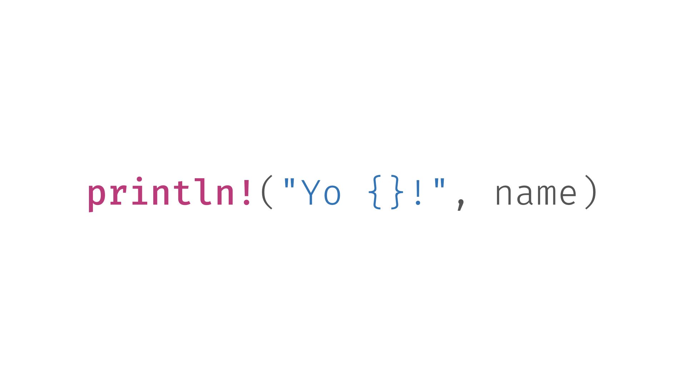
如果你尝试过Rust，应该已经用过Rust的宏了：println!。这个宏 可以在终端输出一行文本，并且支持变量的插值。
简单地说，Rust宏让你可以发明自己的语法，编写出可以自行展开的代码， 也就是我们通常所说的元编程，你甚至可以用Rust宏来创作自己的DSL。
Rust宏的基本运作机制就是：首先匹配宏规则中定义的模式，然后将匹配 结果绑定到变量，最后展开变量替换后的代码。
不理解也没有关系，让我们继续看。
2、如果创建Rust宏/Macro？
可以使用Rust预置的macro_rules!宏来创建一个新的Rust宏。
下图展示了如何创建一个空白的Rust宏：hey!，这个宏什么功能 也没有，我们现在只关注它的结构：
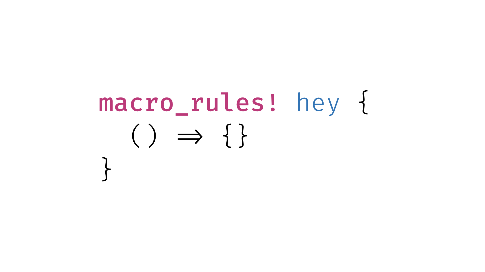
() => {}看起来很神秘，因为它不是标准的Rust语法，是macro_rules!这个宏自己发明的，用来表示一条宏规则，=>左边是匹配模式，右边是 等待展开的代码：
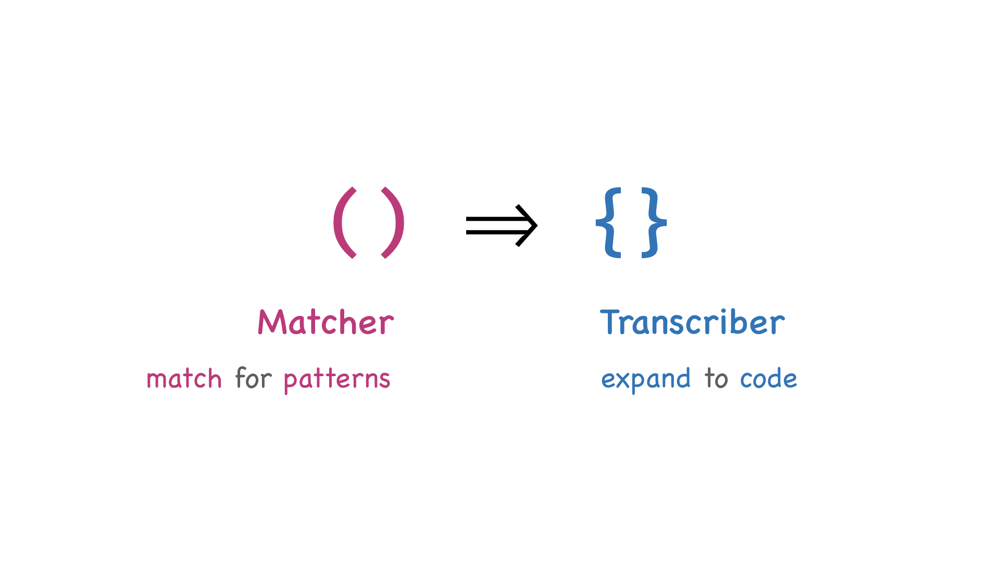
左边的小括号部分是Rust宏的匹配器/Matcher，用来匹配模式并捕捉变量，这是我们 发明自定义语法和DSL的关键所在。
右边的大括号部分是Rust宏的转码器/Transcriber，也就是我们要应用匹配器捕捉到 的变量的部分，Rust编译器将利用变量和这部分的代码来生成实际的Rust代码。
类似于Rust中的match语句，在macro_rules!中可以定义多条宏规则，例如：
1 | macro_rules! hey{ |
3、模式匹配与变量捕捉
现在我们看看Rust宏的模式是如何匹配的。
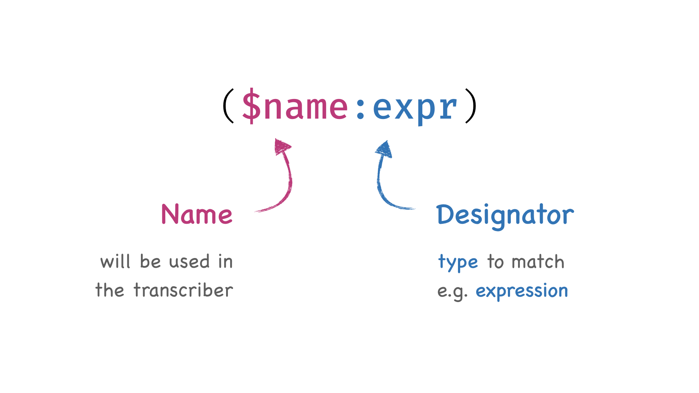
在匹配器/Matcher中，$name部分定义了变量名，匹配结果将绑定到该变量以便 应用到转码器/Transcriber中。在这个示例中，表示我们将Rust宏的匹配结果存入变量$name。
冒号后面的部分被称为选择器/Designator，用于声明我们要匹配的类型。 例如在这个示例中，我们使用的是表达式选择器，也就是expr， 这告诉Rust：匹配一个表达式，然后存入$name变量。
表达式选择器只是Rust中众多可用选择器中的一个，下面是一些常见的 Rust宏选择器：
- item：条目，例如函数、结构、模块等
- block：代码块
- stmt：语句
- pat：模式
- expr：表达式
- ty：类型
- ident：标识符
- path：路径，例如 foo、 ::std::mem::replace, transmute::<_, int>, …
- meta：元信息条目，例如 #[…]和 #![rust macro…] 属性
- tt：词条树
那么，现在如何在转码器/Transcriber中应用我们捕捉到的变量？
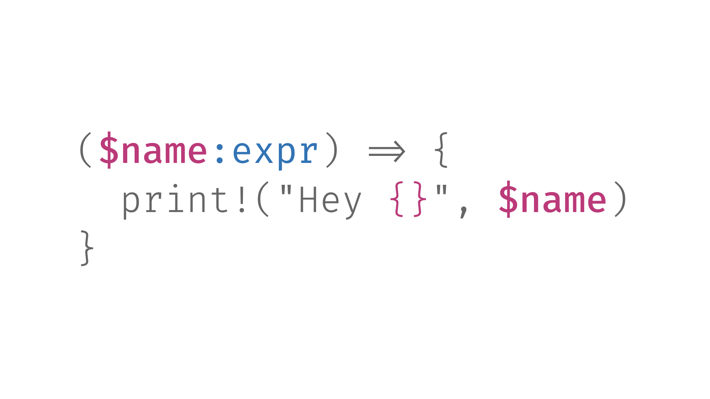
很简单，在Rust宏转码器部分我们只需要在常规的Rust代码中，嵌入匹配器 捕捉到的变量就行了，没什么特别之处！
4、编写第一个Rust宏
我们已经了解了如何编写一个Rust宏，现在让我们动手写一个：
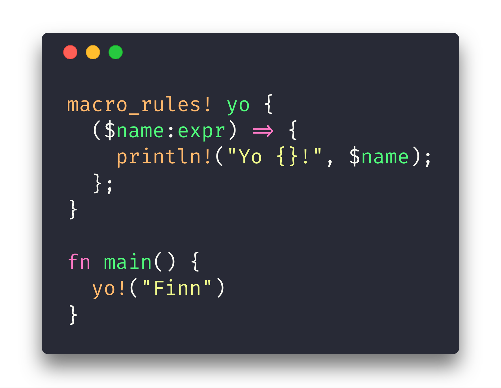
很简单，对吧？
5、重复模式的提取与利用
我们用的许多Rust宏都可以支持非常多的输入。以vec!宏为例，我们 可以这样调用它：vec![rust macro1,2,3,4,5]，或者这样：vec![rust macro1,2,3,,4,5,6,7,8]。
那么vec!宏是如何实现这一点的？很显然它不会去定义成千上万个变量来 逐个保存匹配结果，秘密在于重复模式的匹配：
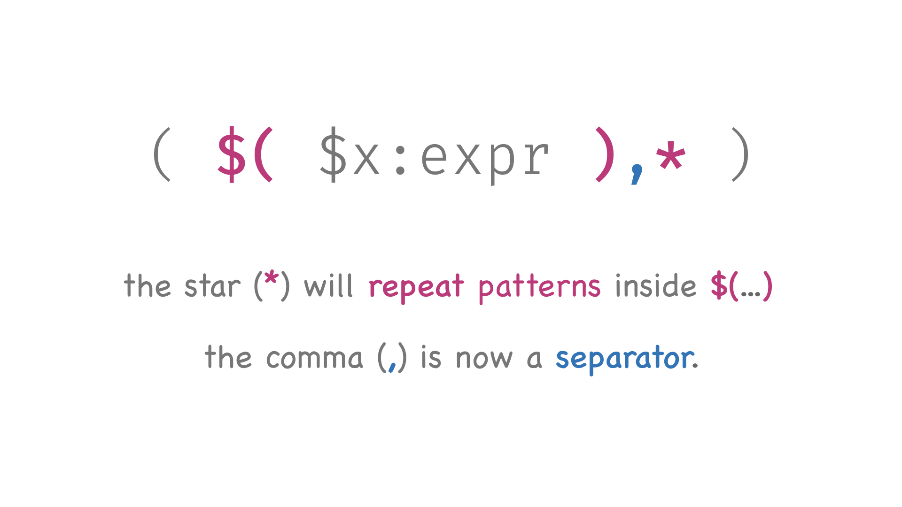
我们只需要把希望重复的模式写在$(...)这部分，然后插入分隔符， 在这里也就是逗号，最后添加一个*符号，表示重复匹配$()中的模式。
还有点晕？让我们看个具体的例子：
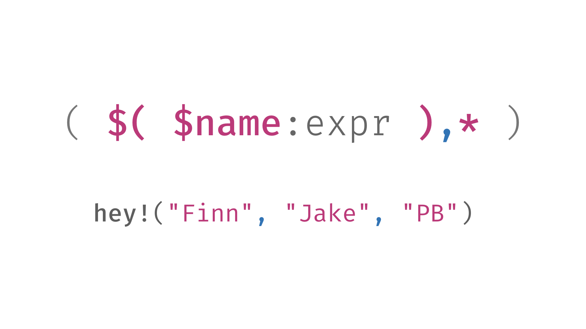
在这个示例中，对于hey!宏，我们重复捕捉输入表达式并存入变量$name， 也就是说，所有捕捉到的表达式都绑定到变量$name了 —— 不妨把 $name 想象成数组变量。
6、用重复模式在Rust中实现Ruby的哈希表语法
如果你之前写过Ruby程序，可能还记得在Ruby中定义哈希表的语法：key => value。 现在我们可以用Rust宏来在Rust中实现哈希表的这种定义方法！
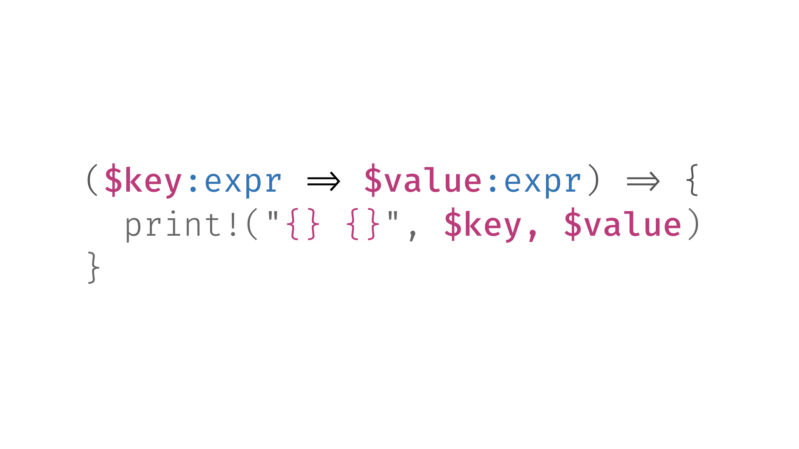
在Rust宏的匹配器部分，我们使用模式$key:expr => $value:expr 来分别捕捉$key和$value表达式，分隔符为=>。 不过现在只能匹配一个键/值对，但是哈希表通常都是多个键值对的。应该 如何实现？
答案是使用重复匹配：
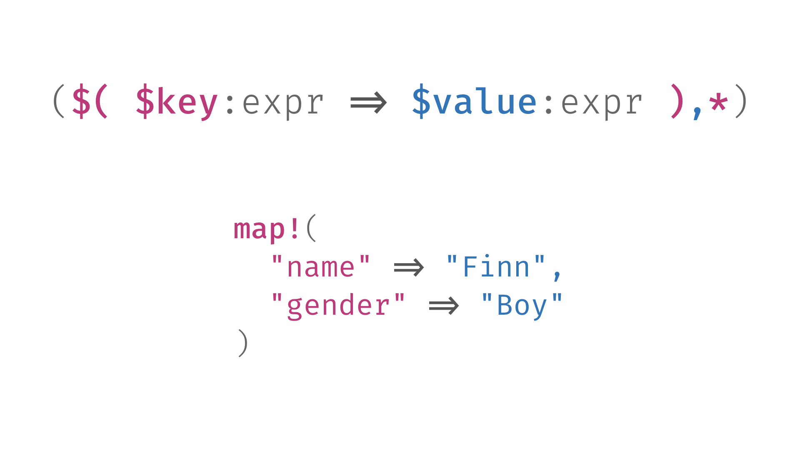
将我们要匹配的键/值对模式放到$(),*，就可以进行重复匹配了。COOL!!
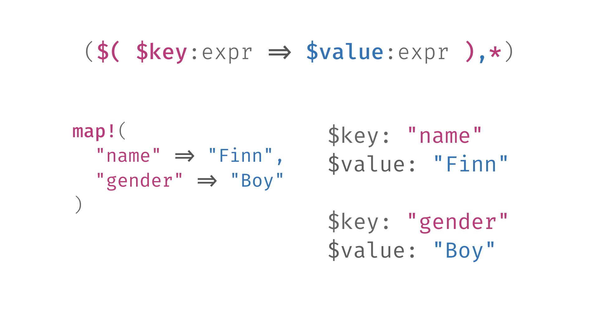
那么，如何应用捕捉到的键/值对？显然，我们应该在Rust宏的转码器中创建哈希表对象， 然后将捕捉到的所有键值对插入该哈希表：
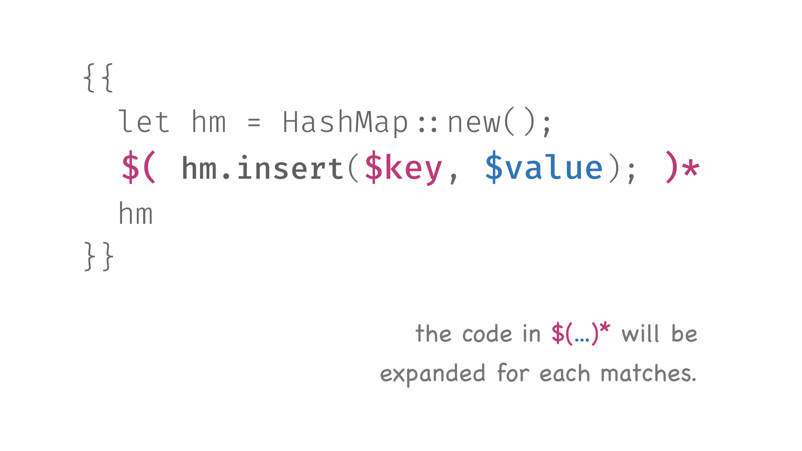
在转码器中，注意代码中的$()*，它的意思是其中的代码会重复展开！
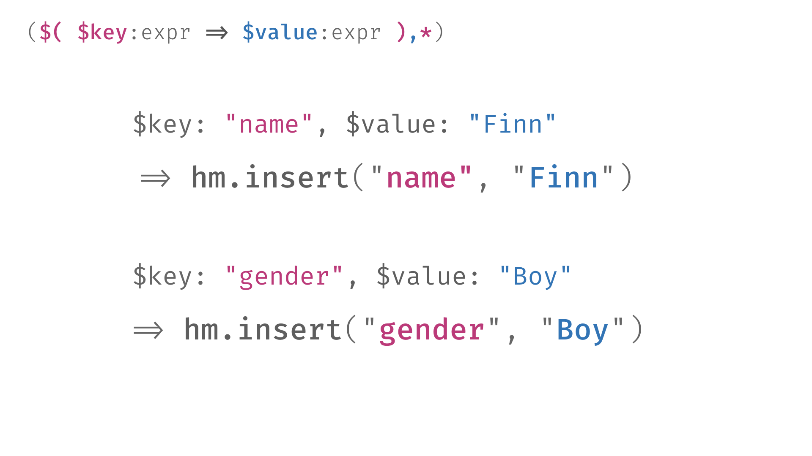
就像你看到的，当我们调用map!("name" => "Finn", "gender" => "Boy")时， 我们在生成两段重复的代码。
key => value将被转码为在Rust宏的转码器/transcriber中指定的代码，也就是 hm.insert($key, $value)，其中$key和$value是我们在Rust宏的匹配器部分捕捉到的变量。
好了，让我们看看完整的map!宏实现:
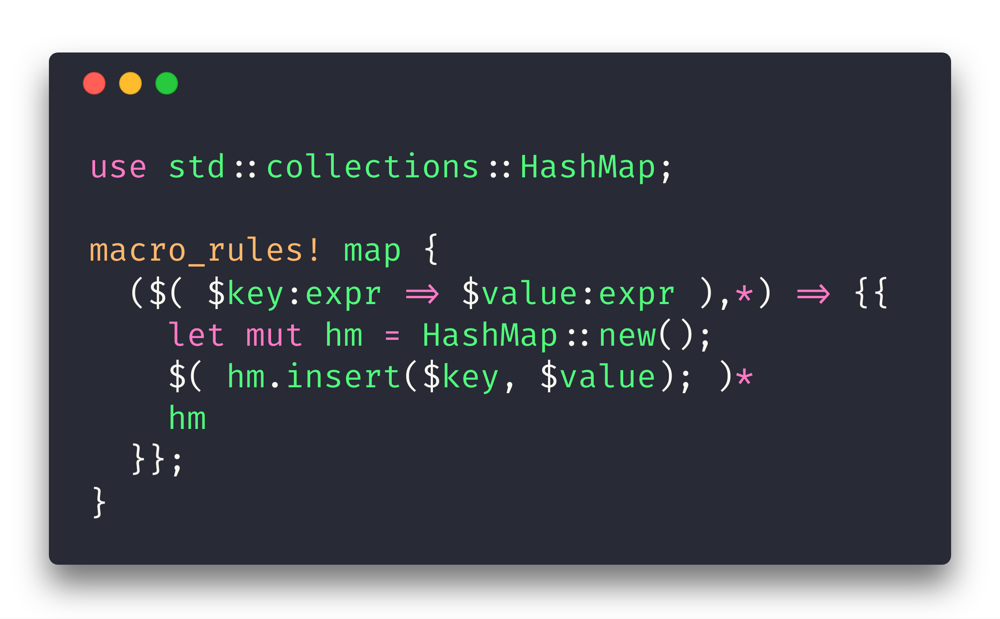
只用了几行代码，我们就创建了一个功能完整的Rust宏！现在让 我们写个小程序测试一下：
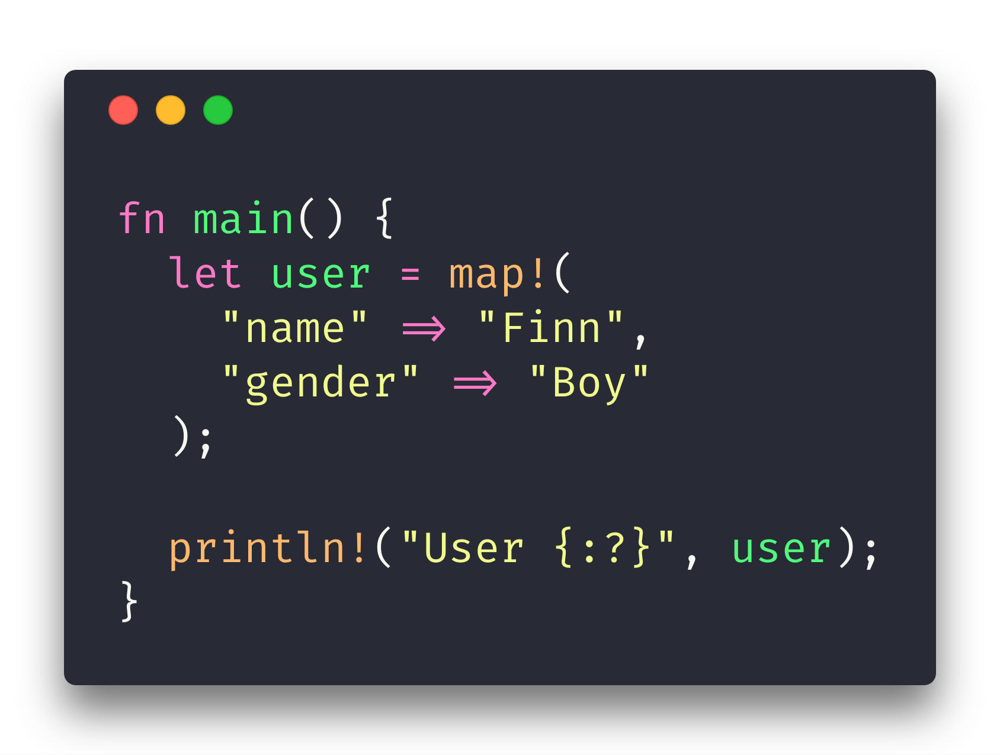
COOOOOOOOOOOOOOOOOOOOOOOOOOOOOOOOOL.
引用
- A Beginner’s Guide to Rust Macros(https://medium.com/@phoomparin/a-beginners-guide-to-rust-macros-5c75594498f1)